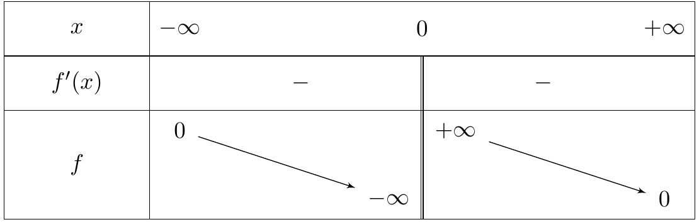
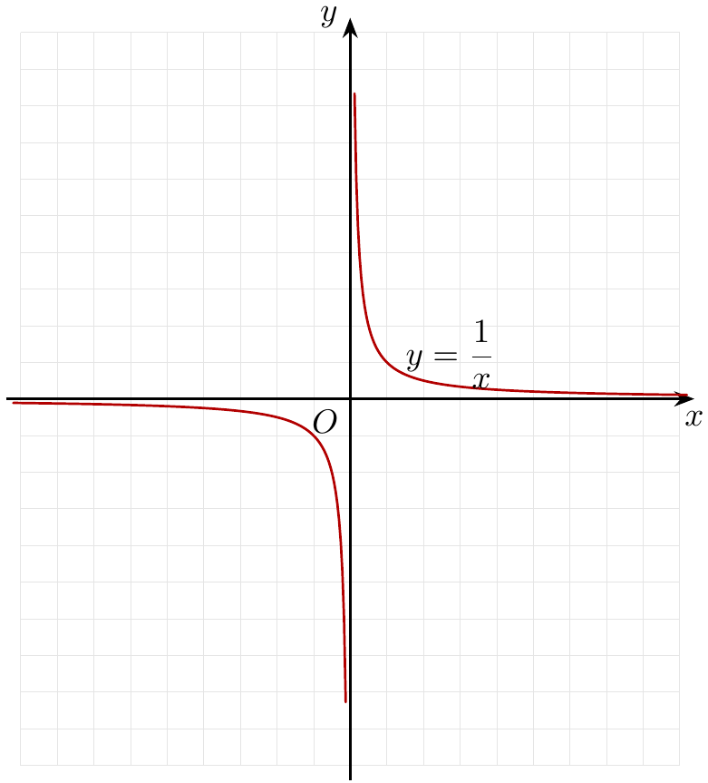
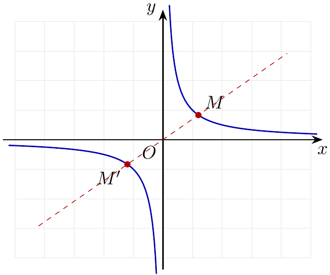
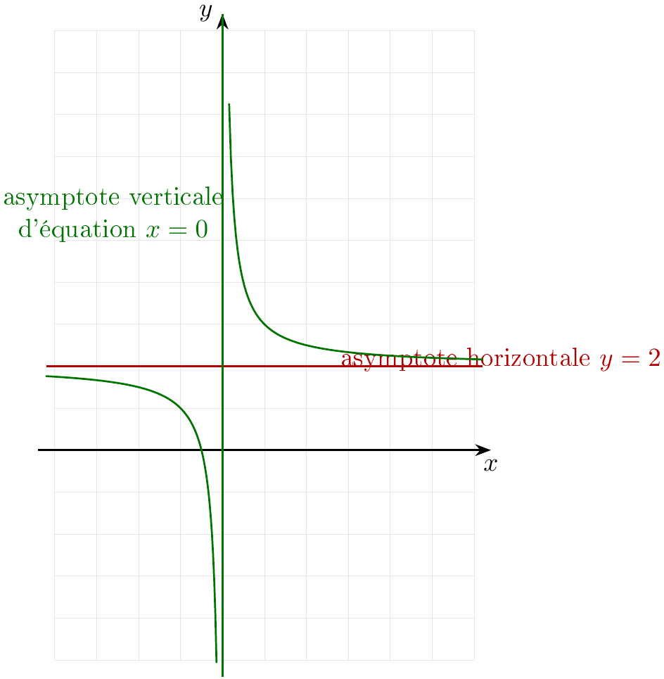

Chapitre II : Fonction inverse
Terminale STMG · Chapitre 2 — Fonction inverse · cours de Frederik de Peyrelongue
I. Définition
La fonction inverse est la fonction définie sur $\left]-\infty\,;0\right[\cup\left]0\,;+\infty\right[$ par
Remarque. $0$ est une valeur interdite pour cette fonction !
La fonction inverse est dérivable sur $\left]-\infty\,;0\right[\cup\left]0\,;+\infty\right[$ et
Comme $x^{2}$ est strictement positif sur $\left]-\infty\,;0\right[\cup\left]0\,;+\infty\right[$, on en déduit que la fonction dérivée est strictement négative.

Sa courbe représentative est une hyperbole.

La fonction inverse est une fonction impaire.
La courbe $\mathcal{C}_{f}$ représentant la fonction inverse est symétrique par rapport à l'origine.
Soit $M$ appartenant à $\mathcal{C}$ : $M$ a pour coordonnées $\begin{pmatrix}x\\ \frac{1}{x}\end{pmatrix}$.
Le point $M'$ symétrique de $M$ par rapport à l'origine a donc pour coordonnées $\begin{pmatrix}-x\\ -\frac{1}{x}\end{pmatrix}$.
Les coordonnées de $M'$ vérifient $f(x)=\dfrac{1}{x}$ : $M'$ appartient aussi à la courbe $\mathcal{C}$.

Remarque. La fonction inverse est une fonction impaire, ce qui est une condition suffisante pour prouver la symétrie centrale de la courbe de la fonction inverse.
II. Notion de limite
On considère la fonction $f$ définie sur $\R^{*}$ par
Cette fonction est dérivable comme somme de deux fonctions dérivables sur $\R^{*}$.
On peut dresser le tableau de variation :
La fonction $f$ est strictement décroissante sur les deux intervalles ouverts.
On se place sur $\left]0\,;+\infty\right[$ et on observe le comportement de la fonction lorsque $x$ grandit.
On remarque au préalable que $f(x)>2$ sur l'intervalle $\left]0\,;+\infty\right[$.
En effet, sur $\left]0\,;+\infty\right[$ : $x>0$ $\iff \dfrac{1}{x}>0$ $\iff 2+\dfrac{1}{x}>2$ $\iff f(x)>2$.
Étude du comportement pour $x$ très grand
Pour $x=100$, $f(100)=2{,}01$ et, comme $f$ est strictement décroissante, on a :
(propriété de décroissance de la fonction $f$).
Pour $x=10\,000$, $f(10\,000)=2{,}0001$ et, comme $f$ est strictement décroissante, on a :
On voit intuitivement que, lorsque $x$ grandit, la fonction diminue vers $2$ : pour $x>10\,000$, la fonction est bloquée entre $2$ et $2{,}0001$, et elle diminue toujours mais ne peut pas passer sous $2$.
Donc elle aura $2$ pour limite en plus l'infini :
Interprétation graphique :
La fonction $f$, lorsque $x$ devient grand, devient presque constante, ici égale à $2$ ; donc graphiquement la courbe va ressembler à une droite horizontale : on parle d'asymptote horizontale à la courbe $\mathcal{C}_{f}$.
On dira que la droite d'équation $y=2$ est une asymptote horizontale à $\mathcal{C}_{f}$.
Étude du comportement pour $x$ très petit positif
Pour $x=0{,}01$, $f(0{,}01)=102$ et, comme $f$ est strictement décroissante, on a :
Pour $x=0{,}0001$, $f(0{,}0001)=10\,002$ et, comme $f$ est strictement décroissante, on a :
Pour $x=10^{-6}$, $f\left(10^{-6}\right)=1\,000\,002$ et, comme $f$ est strictement décroissante, on a :
Lorsque $x$ s'approche de zéro par la droite, il est possible de rendre $f(x)$ aussi grand que l'on souhaite.
On dira que la fonction admet une limite infinie en zéro. On notera :
Interprétation graphique :
La fonction $f$, lorsque $x$ devient très proche de zéro, monte verticalement ; donc graphiquement la courbe va ressembler à une droite verticale : on parle d'asymptote verticale à la courbe $\mathcal{C}_{f}$.
On dira que la droite d'équation $x=0$ est une asymptote verticale à $\mathcal{C}_{f}$.

III. Limite de la fonction inverse
- $\lim\limits_{x\to+\infty}\dfrac{1}{x}=0^{+}$ : la limite de la fonction inverse en plus l'infini est zéro, mais zéro strictement positif, que l'on note $0^{+}$.
- $\lim\limits_{x\to-\infty}\dfrac{1}{x}=0^{-}$ : la limite de la fonction inverse en moins l'infini est zéro, mais zéro strictement négatif, que l'on note $0^{-}$.
- $\lim\limits_{\substack{x\to 0\\ x>0}}\dfrac{1}{x}=+\infty$ : la limite de la fonction inverse lorsque $x$ tend vers $0^{+}$ est de plus l'infini.
- $\lim\limits_{\substack{x\to 0\\ x<0}}\dfrac{1}{x}=-\infty$ : la limite de la fonction inverse lorsque $x$ tend vers $0^{-}$ est de moins l'infini.
Interprétation géométrique de ces limites.
- La fonction inverse admet une asymptote horizontale d'équation $y=0$ en plus et moins l'infini.
- La fonction inverse admet une asymptote verticale en $0$, d'équation $x=0$.